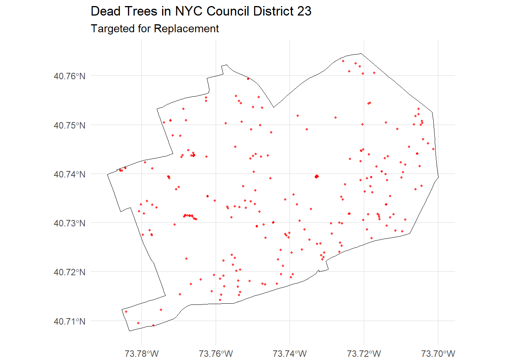
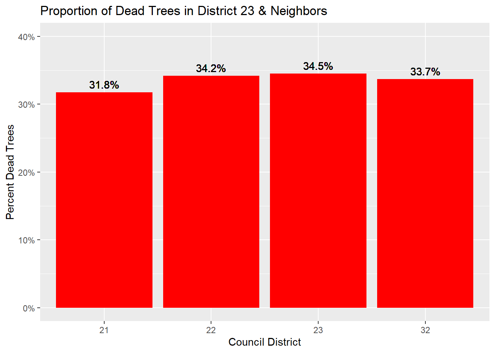
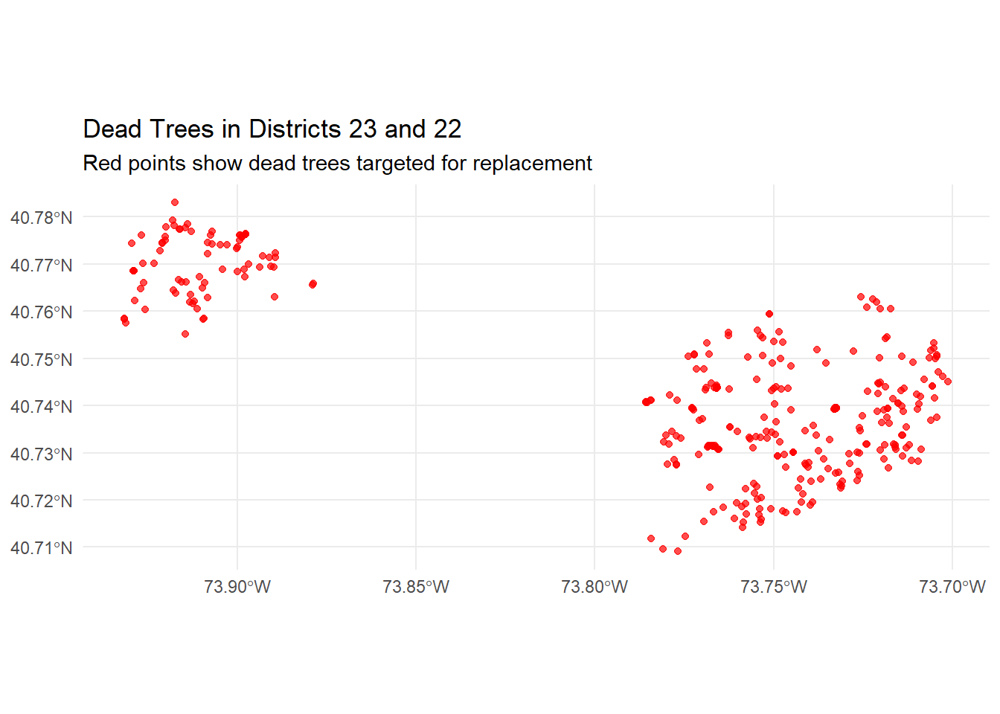

Trees are a critical part of New York City’s urban infrastructure—improving air quality, reducing heat, boosting neighborhood appeal, and supporting public health. Yet, not all city neighborhoods benefit equally from these advantages. In this project, I analyze street tree conditions across multiple districts, using geospatial data to highlight where the need for investment is greatest. By focusing on dead and missing trees, my goal is to make a clear, data-driven case for a targeted replanting initiative in District 23—showing how government can use analytics to maximize the impact of limited resources and deliver tangible improvements at the neighborhood level.
Task 1: Download NYC City Council District Boundaries
#Read the nycc_25c.ship file from the filepathlibrary(sf)
Linking to GEOS 3.13.1, GDAL 3.11.0, PROJ 9.6.0; sf_use_s2() is TRUE
Code
data <-st_read("C:/Users/final/OneDrive/ドキュメント/STA9750-2025-FALL/data/mp03/nycc_25c/nycc_25c/nycc.shp")
Reading layer `nycc' from data source
`C:\Users\final\OneDrive\ドキュメント\STA9750-2025-FALL\data\mp03\nycc_25c\nycc_25c\nycc.shp'
using driver `ESRI Shapefile'
Simple feature collection with 51 features and 3 fields
Geometry type: MULTIPOLYGON
Dimension: XY
Bounding box: xmin: 913175.1 ymin: 120128.4 xmax: 1067383 ymax: 272844.3
Projected CRS: NAD83 / New York Long Island (ftUS)
Code
#Transform the data using st_transformnycc_transformed <-st_transform(data, crs="WGS84")nycc_transformed
Next, we will use an API to download the geospatial data for the trees across New York City. It has alot of good stuff such as the date which each tree was planted, the condition of each tree, and more so I highly recommend checking it out! I have used the httr library as httr2 didn’t work as intended from my experience.
The following objects are masked from 'package:stats':
filter, lag
The following objects are masked from 'package:base':
intersect, setdiff, setequal, union
Code
download_and_read_nyc_tree_points <-function(base_url ="https://data.cityofnewyork.us/resource/hn5i-inap.geojson",data_dir ="data/mp03",limit =50000) {# Setup directoryif (!dir.exists(data_dir)) dir.create(data_dir, recursive =TRUE)# First, determine total row count count_url <-"https://data.cityofnewyork.us/resource/hn5i-inap.geojson?$select=count(*)" total_records <-content(GET(count_url))[[1]][[1]] %>%as.numeric()# Download data in pages data_files <-character() offset <-0 page_num <-1while (offset < total_records) { file_path <-file.path(data_dir, sprintf("treepoints_%05d.geojson", page_num))if (!file.exists(file_path)) { query_url <-paste0( base_url, "?$limit=", limit, "&$offset=", offset )GET(query_url, write_disk(file_path, overwrite =TRUE))Sys.sleep(0.5) # be extra polite to the API! } data_files <-c(data_files, file_path) offset <- offset + limit page_num <- page_num +1 }# Read and combine all files sf_list <-lapply(data_files, st_read, quiet =TRUE) combined_sf <-bind_rows(sf_list) combined_sf}dir.exists("C:/Users/final/OneDrive/ドキュメント/STA9750-2025-FALL/data/mp03")
[1] TRUE
Code
tree_data <-download_and_read_nyc_tree_points()
Part 3: Plot all Tree Points
We will create a map highlighting 5000 trees across all 26 districts in NYC. District 10 has the most amount of trees in the map due to Central Park being in there, but it is not the focus of this project.
Code
library(sf)library(ggplot2)set.seed(100)sample_size <-5000tree_sample <- tree_data[sample(1:nrow(tree_data), sample_size), ]ggplot() +geom_sf(data = nycc_transformed, fill =NA, color ="black", size =0.5) +geom_sf(data = tree_sample,color ="darkgreen",alpha =0.2,size =0.3 ) +theme_minimal() +labs(title ="Sample of 5,000 NYC Trees on Council Districts" )
We will now join the Tree Points data onto the District boundaries using st_join!
Code
library(sf)# Join: tree_data as points, nycc_transformed as regionstree_with_district <-st_join( tree_data, nycc_transformed,join = st_intersects # "Does this point fall in this region?")# Check resulthead(tree_with_district)
# To get district with most trees:top_district <- tree_counts %>%slice(1)
District 50 has the most graphed trees at 5313!
2. Which district had the highest density of trees?
Code
library(sf)library(dplyr)# After counting trees per district (sf object tree_counts):tree_counts_no_geom <- tree_counts %>%st_drop_geometry()# district_areas is your districts sf object, select relevant columns then drop geometry:area_table <- nycc_transformed %>%select(CounDist, Shape_Area) %>%st_drop_geometry()# Now do left_join safely:tree_density <- tree_counts_no_geom %>%left_join(area_table, by ="CounDist") %>%mutate(density = n_trees / Shape_Area) %>%arrange(desc(density))head(tree_density)
Pyrus Calleryana, known as the Callery Pear, is the species of tree most close to Baruch College at position (-73.98417, 40.73936).
Task 5: Replacing Dead Trees in Council District 23
We propose a focused project to replace dead street and park trees in Council District 23, enhancing neighborhood aesthetics, increasing canopy cover, supporting public health, and furthering New York City’s environmental sustainability goals. Our district has one of the highest fractions of dead trees in Queens, indicating an urgent need for investment.
Project Scope:
Replace: 271 dead or hazardous trees identified from the latest tree census
Remove: 100 stumps to make way for new plantings
Plant: 271 new, resilient trees, prioritizing canopy species and those most beneficial to local air quality
Create a map showcasing Dead Trees in NYC targeted for replacement.
Code
library(ggplot2)ggplot() +geom_sf(data =filter(nycc_transformed, CounDist ==23), fill =NA, color ="black") +geom_sf(data =filter(tree_with_district, CounDist ==23& tpcondition =="Dead"), color ="red", size =0.7, alpha =0.7) +theme_minimal() +labs(title ="Dead Trees in NYC Council District 23", subtitle ="Targeted for Replacement")

Bar Graph comparing NYC District 23 with several other comparable districts (22, 21, 32)
Code
library(dplyr)# Summarize tree stats by districttree_summary <- tree_with_district %>%group_by(CounDist) %>%summarise(total_trees =n(),dead_trees =sum(tpcondition =="Dead", na.rm =TRUE),dead_pct = dead_trees / total_trees )district_areas <- tree_with_district %>%select(CounDist, Shape_Area) %>%st_drop_geometry()tree_cmp <- tree_summary %>%left_join(district_areas, by ="CounDist") %>%mutate(tree_density = total_trees / Shape_Area,dead_density = dead_trees / Shape_Area )compare_districts <-c(23, 22, 32, 21) # or others as you choosetree_cmp_selected <- tree_cmp %>%filter(CounDist %in% compare_districts)library(ggplot2)library(scales) # for percent()ggplot(tree_cmp_selected, aes(x =factor(CounDist), y = dead_pct)) +geom_col(fill ="red") +geom_text(aes(label =percent(dead_pct, accuracy =0.1)), vjust =-0.5) +labs(x ="Council District",y ="Percent Dead Trees",title ="Proportion of Dead Trees in District 23 & Neighbors" ) +scale_y_continuous(labels =percent_format(accuracy =1), limits =c(0, 0.4))
Warning: Removed 1920 rows containing missing values or values outside the scale range
(`geom_col()`).

District 23 stands out as the most urgent candidate for a dead tree replacement initiative, with 34.5% of its trees classified as dead—the highest proportion among neighboring districts 21 (31.8%), 22 (34.2%), and 32 (33.7%). This elevated rate of tree loss signals a critical need for immediate investment, especially compared to surrounding areas, and suggests that targeted replanting here will deliver the greatest improvement in the local urban canopy, street safety, and neighborhood appearance.
Code
library(ggplot2)library(sf)# Select your districtsdistricts_to_plot <-c(23, 22)# Filter dead trees in those districtsmap_dead_trees <- tree_with_district %>%filter(CounDist %in% districts_to_plot, tpcondition =="Dead")# Get unique district boundaries (polygon geometry)district_boundaries <- tree_with_district %>%filter(CounDist %in% districts_to_plot) # Use your polygons sf objectggplot() +geom_sf(data = map_dead_trees, color ="red", size =1.5, alpha =0.7) +labs(title ="Dead Trees in Districts 23 and 22",subtitle ="Red points show dead trees targeted for replacement" ) +theme_minimal()

The map clearly illustrates that District 23 not only has a high concentration of dead trees compared to its neighbor, but that these losses are spread across the community. By investing in the removal and replanting of dead trees in District 23, the Parks Department will address a clear and quantifiable gap—improving neighborhood safety, visual appeal, and environmental health. Overall, this project offers a data-driven opportunity to restore and revitalize our local urban forest where it is needed most.